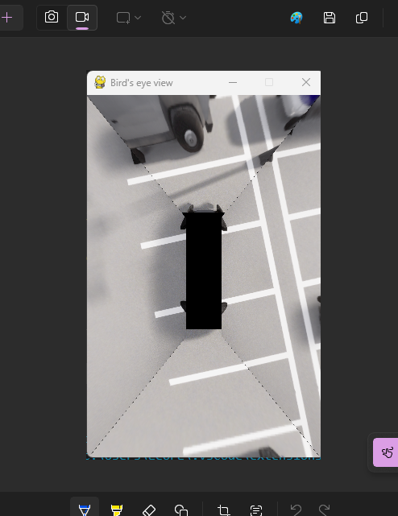
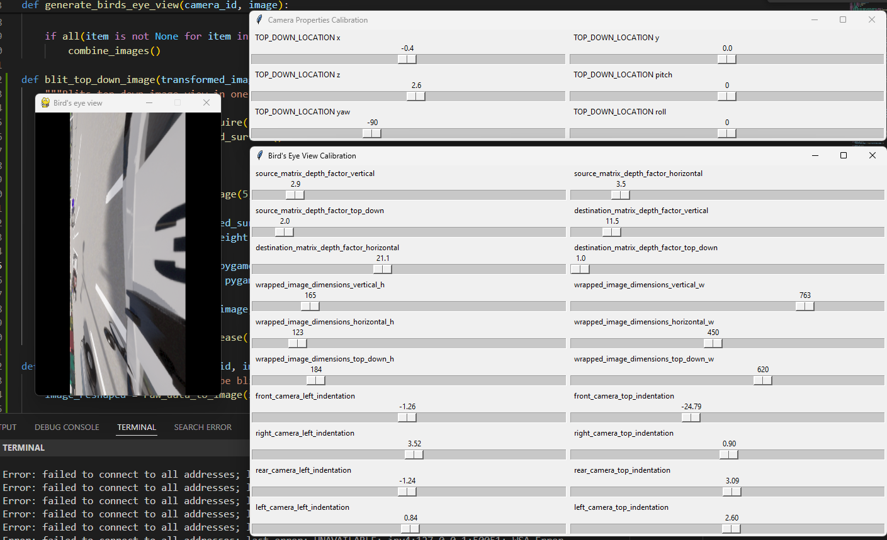
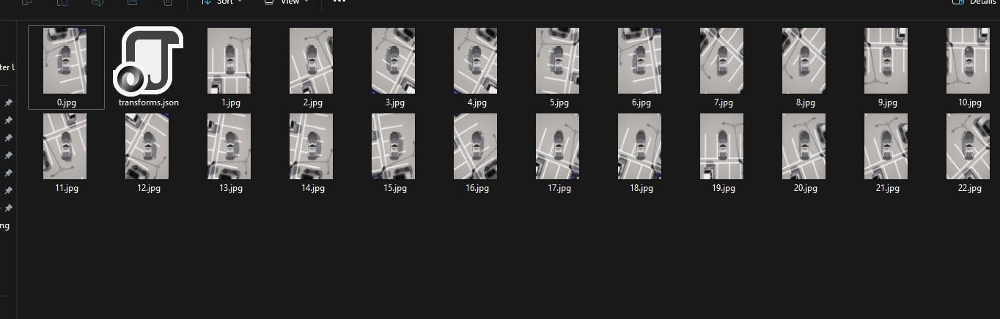

Capture and calibration workflow
Development screenshots showing bird’s-eye-view generation, camera tuning, and captured image sequences. Select any image to inspect the full screenshot.

Captured image

Live bird’s-eye view

Bird’s-eye view calibration tool
